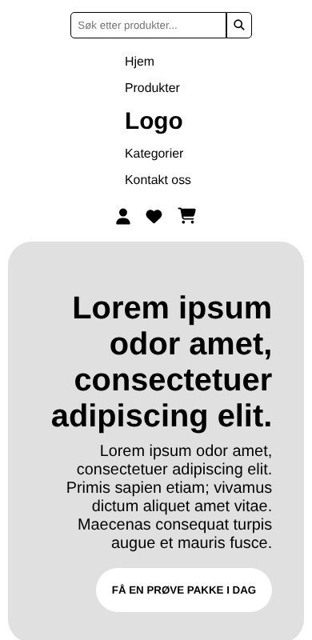
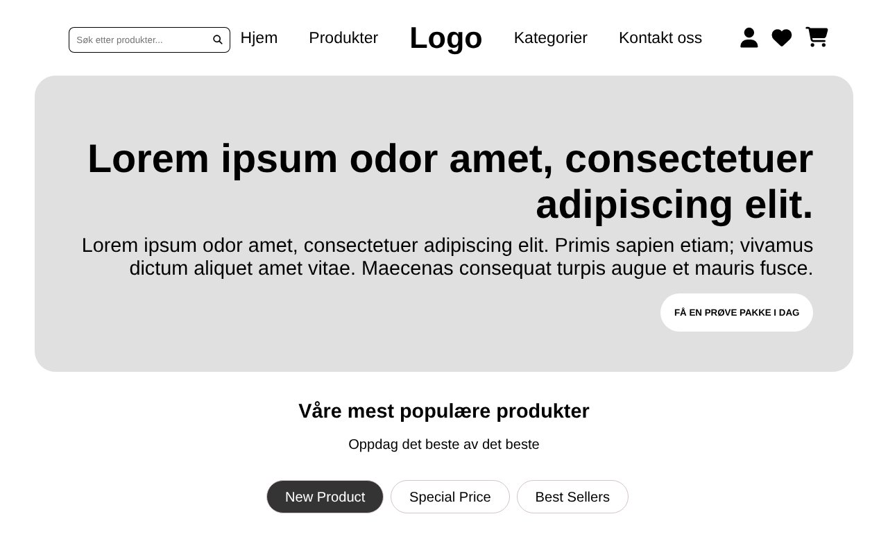
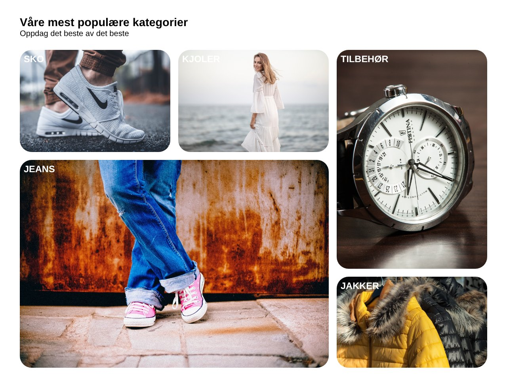
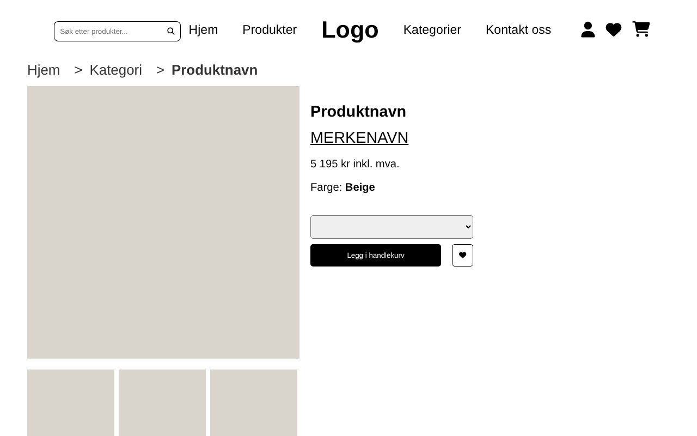

HTML
- Semantic structure instead of divs
- Same header and footer copied to all three pages
- Anchor links from the menu to sections on the front page
- Alt text on all images
Frontend · HTML & CSS
A responsive three-page web shop built from sketches with only HTML and CSS: a front page, a product page and a checkout. Written by hand, without frameworks.

Build index.html, product.html and checkout.html to match the sketches, with one shared stylesheet. The rules were strict, which forced clean, semantic markup.



This portfolio is built the same way, with plain HTML and CSS.